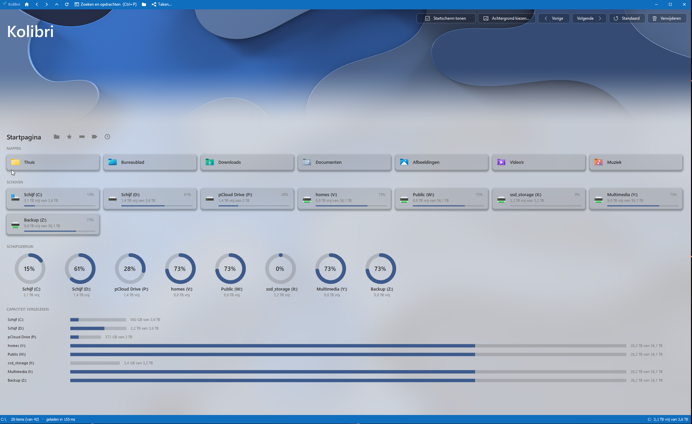
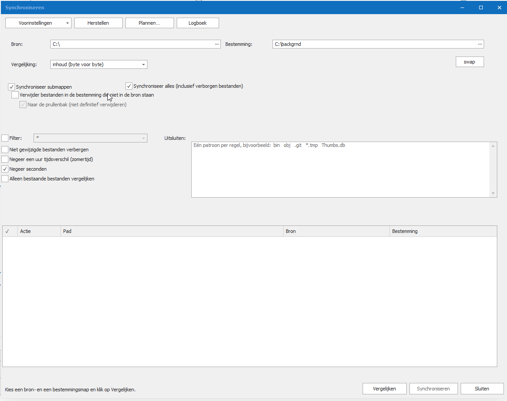
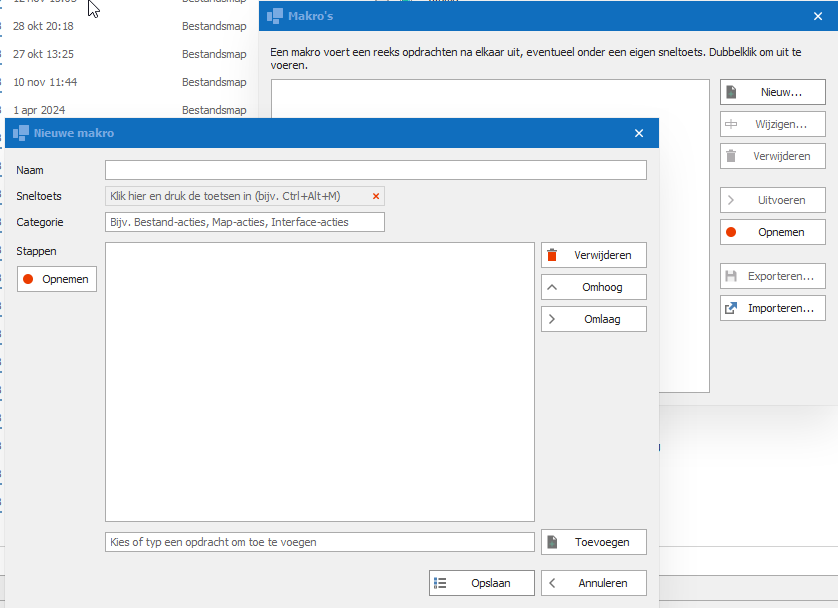
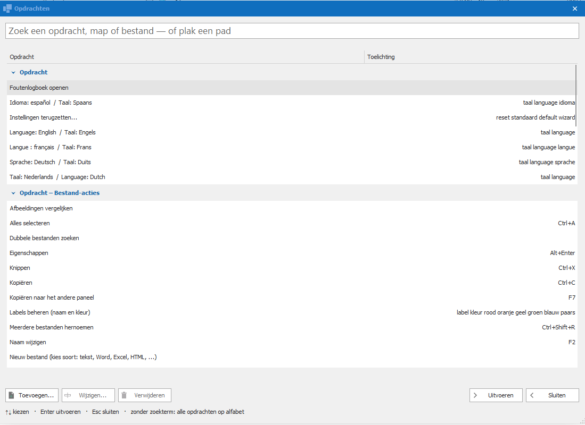
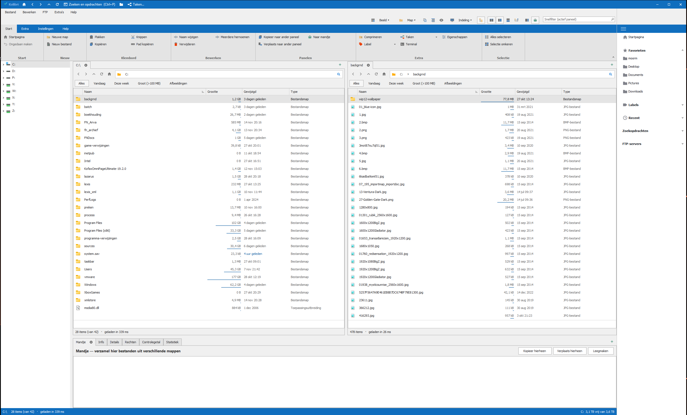

Zo ziet Kolibri eruit
Klik op een schermafdruk om hem groot te bekijken.





Kolibri vervangt Verkenner door een vlotte bestandsbeheerder met één of twee panelen, tabbladen en een startpagina – plus synchroniseren, makro's, FTP en een beveiligde kluis.

Kolibri is gemaakt voor wie de hele dag met bestanden werkt: snel, overzichtelijk en met precies de gereedschappen die je mist in Verkenner.
Naast of onder elkaar, elk met eigen tabbladen. Kopiëren met F7, verplaatsen met F8. Werkruimtes bewaren je opstelling.
Eén mappenboom die het actieve paneel volgt, of een tweede rechts: elk paneel zijn eigen boom.
Je favoriete mappen en schijven als tegels op een eigen achtergrond, met de vrije ruimte in één oogopslag.
Onder de bestanden: Mandje, Info, Details, Rechten, Controlegetal en Statistiek – jij kiest welke.
Maak een bestemming gelijk aan de bron, zie vooraf wat er gebeurt en krijg na afloop een rapport. Ook gepland.
Neem op wat je doet – map kiezen, selecteren, kopiëren, plakken – en speel het af met één sneltoets.
Ctrl+P vindt elke opdracht, map of eigen programma. Slim zoeken op naam, inhoud, datum, grootte en label.
Patronen, nummeren, zoeken en vervangen (ook met reguliere expressies) – met een voorbeeld vooraf. Alles ongedaan te maken.
Een server opent als gewone map. Wachtwoorden versleuteld bewaard, vingerafdruk gecontroleerd.
Versleutelde map met AES-256, hoofdwachtwoord en herstelcode. Openen, bewerken en weer veilig opbergen.
Snelle blik met de spatiebalk, voorbeeld van afbeeldingen, PDF en code, afbeeldingen vergelijken en dubbele bestanden vinden.
Thema's, kleurenpaletten, pictogrammensets, knoppenbalk groot of compact, eigen sneltoetsen.
Klik op een schermafdruk om hem groot te bekijken.




Bij de eerste start helpt de installatiewizard je op weg. Alles is later nog aan te passen.
Het hele programma én de handleiding zijn er in vijf talen.
Alles kan met de muis, maar met een paar toetsen ben je sneller. Elke sneltoets is zelf in te stellen.
| Ctrl P | Zoeken en opdrachten |
| Ctrl D | Twee panelen aan/uit |
| Tab | Naar het andere paneel |
| F7 / F8 | Kopiëren / verplaatsen naar het andere paneel |
| Spatie | Snelle blik |
| Ctrl T / W | Tabblad openen / sluiten |
| F2 | Naam wijzigen |
| Ctrl Shift R | Meerdere hernoemen |
| Ctrl Z | Ongedaan maken |
| Ctrl Shift F9 | Makro opnemen |
| Ctrl H | Verborgen bestanden |
| F1 | Handleiding in jouw taal |
Download de nieuwste versie, start de installatie en de wizard doet de rest. De handleiding staat in vijf talen klaar.
Download voor Windows Bekijk op GitHubKolibri werkt naast Verkenner: je opent het wanneer je wilt en Verkenner blijft gewoon bestaan. Het rechtsklikmenu, slepen en de prullenbak werken zoals je gewend bent.
Ja. Ctrl+Z maakt hernoemen, verplaatsen, kopiëren, nieuwe mappen en verwijderen naar de prullenbak ongedaan.
Nee. Synchroniseren werkt altijd één kant op: de bestemming wordt gelijk gemaakt aan de bron. Je ziet vooraf per bestand wat er gebeurt en krijgt na afloop een rapport.
Bestanden worden versleuteld met AES (128, 192 of 256 bits) en een hoofdwachtwoord. Met de herstelcode kom je er ook in als je het wachtwoord vergeet – bewaar die buiten je pc.
Kopieer de map %AppData%\Kolibri. Makro's kun je ook los exporteren en importeren.
Nog niet. Kolibri is nu alleen voor Windows.